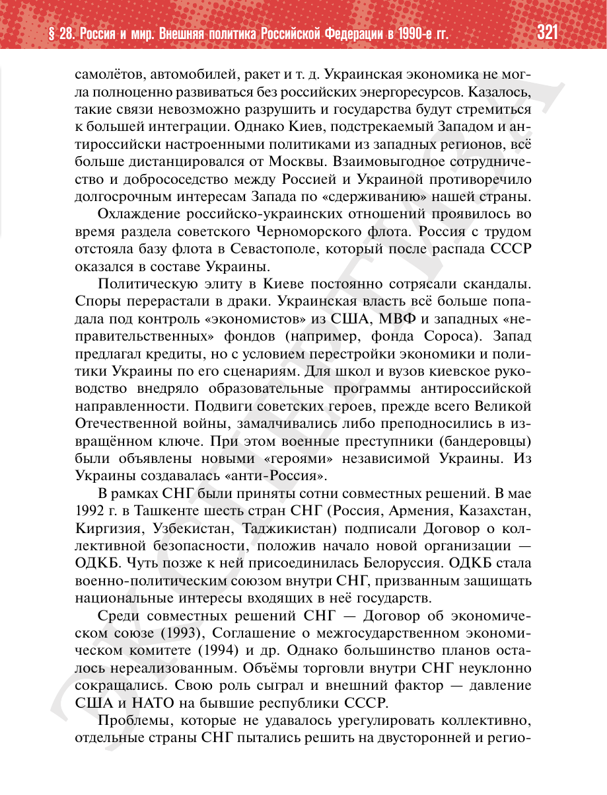

⌂
Мединский.нет
Последнее обновление: 29.08.2026
Мединский.нет
›
История России. 11 класс. Базовый уровень
›
Глава II. Российская Федерация в 1992 — начале 2020-х гг.
›
§ 28. Россия и мир. Внешняя политика Российской Федерации в 1990-е гг.
›
стр. 322

← стр. 321
Оглавление
стр. 323 →
×